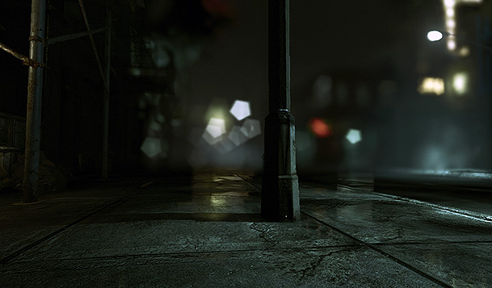
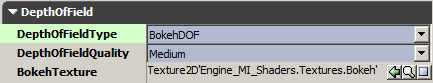
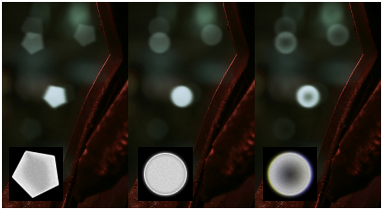
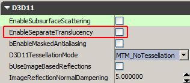
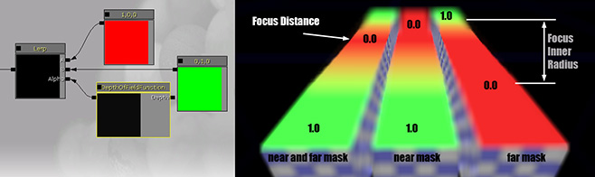
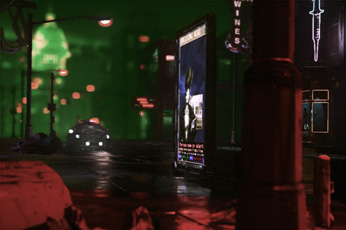

Bokeh Depth of Field
Overview
The following real world image made with a digital camera shows an object partly in focus and partly out of focus.
The out of focus parts form a circular shape which is called Bokeh (Japanese). It can be seen more clearly with small bright objects that are heavily out of focus.
We want to simulate this effect and accept approximations that allow for a efficient real-time implementation. Like many other Depth of Field rendering methods we are doing this in a post process to an color image. By using per pixel depth information and the so called Circle of Confusion function we can compute how sharp or out of focus a certain image part should be.

This real-time rendered image depicts objects that are in focus sharp and object that are out of focus blurred. The Bokeh shape mimics a 5 blades lens iris.
Activating Bokeh Depth of Field
Note: The feature requires geometry shader support and is currently only implemented for Direct3D 11 (how to activate can be found here).
Open the active post processing chain and click (or add) the uber post process effect. In the group Depth of Field you can find the relevant settings:

Make sure the Type is set to "BokehDOF".
The Quality allows to trade quality over performance but the effect might be minor. Ideally the setting is left to Low and only raised if there is a visible difference and the performance is good enough.
The BokehTexture can be any 2D texture but ideally it should:
- be grey scale (correct color fringe would be screen position dependent but adding a color shift to the image can look like color fringe)
- not bigger than 128 x 128 (more would be a memory waste)
- have a dark border (bigger quads render bigger textures and the Bokeh shape will be anti-aliased from the bilinear filtering)
- be uncompressed or luminance only
- have decent brightness (see samples)
The Bokeh Shape
Artists can specify the Bokeh texture in the postprocessing chain. The following image shows how a different textures (lower left) are affecting the rendered image:

Translucency
Doing Depth of Field as a post process works quite well for opaque objects, as each pixel (or fragment) has a depth associated. Translucent rendering however cannot work well with a post processing method. Ignoring the problem can result in translucent objects that are either too much in focus or too blurry (depending on their background).
We solved the problem by giving control over what translucent objects are affected by Depth of Field and which aren't (material settings, later we made this working without requiring DX11):

Additionally there is a new material node called "DepthOfFieldFunction" that allows to adjust shading (e.g. fade out or blend to a blurry state):

Known limitations (low level details)
- As the technique uses a half resolution image as source there can be minor artifacts of bright pixels leaking into the wrong layer.
- The effect works with full scene anti-aliasing (MSAA) but very bright parts of a pixels can leak into the wrong layer. This could be prevented by making the upsampling in the uberpostprocesseffect MSAA aware.
- Occlusion within the layers is not handled. This can result in minor color leaking.
- All the out of focus effects are not affected by motion blur (This means either missing motion blur or hard silhuettes where the MotionBlurSoftEdge feature should soften the edge).
Optimizations (low level details)
For better performance the algorithm is applied to a half resolution image only and later recombined with the full resolution image. The recombining step is done per pixel and ignoring MSAA (for simplicity and performance). In some cases this can become a quality issue (can be verified by disabling MSAA).
On modern graphic cards the performance is good when using a reasonable small Bokeh radius. A bigger radius can quickly results in slow rendering (2x radius is 4x fill cost).
The geometry shader processes 2x2 blocks. If the content of a 2x2 block is suitable (heuristic is defined in code) only one quad for the whole block is spawned, otherwise it spawns one quad for each pixel (in total 4 quads). The following image shows how some areas can be rendered with 1 quad only (green) and some areas needs to be rendered with 4 quads (red), everything else is showing the full res scene color:

Important!
You are viewing documentation for the Unreal Development Kit (UDK).
If you are looking for the Unreal Engine 4 documentation, please visit the Unreal Engine 4 Documentation site.